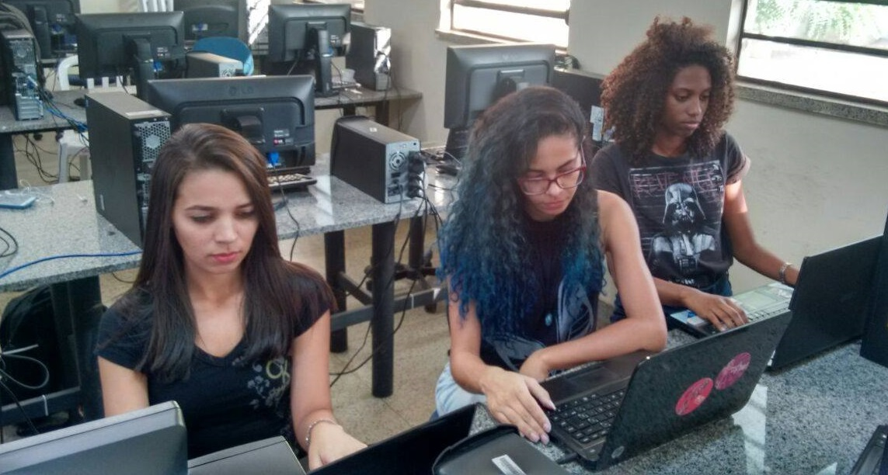

O ProgramAda's atua na área de Tecnologia da Informação com o objetivo de esclarecer acerca da nossa área, além de informar sobre o contexto social das mulheres no ramo da tecnologia. Somos estudantes do curso de Sistemas de Informação da Universidade Federal do Piauí (UFPI). E notamos que atualmente somos minoria, tanto no espaço acadêmico, quanto no mercado de trabalho. Levando em consideração que a Tecnologia da Informação (TI) é uma área historicamente feminina, porém culturalmente ainda é uma área considerada masculina, buscamos portanto, informações para esclarecer o porquê da queda da nossa participação neste meio. Procuramos informar também sobre casos de sucesso que possam motivar meninas e mulheres a ingressarem na área.
O que vamos fazer?
Empoderar meninas e mulheres por meio da tecnologia. Não se trata de falta de interesse ou falta de capacidade, mas sim de aspectos culturais. Para nós meninas o desafio inicia desde cedo.